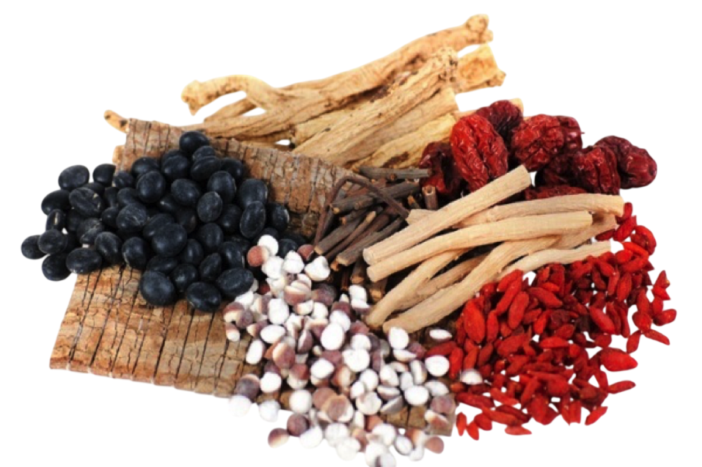

ĐÔNG Y ĐƯỜNG
ĐÔNG Y ĐƯỜNG
ĐÔNG Y ĐƯỜNG
ĐÔNG Y ĐƯỜNG
Y học cổ truyền không chỉ là chữa bệnh, mà là nghệ thuật lắng nghe cơ thể. Chúng tôi mang đến những tinh hoa thảo dược ngàn năm, giúp bạn cân bằng thể chất và tinh thần, khôi phục sinh khí từ sâu bên trong.
Khám Phá Tủ Thuốc Tự NhiênĐược hình thành và phát triển qua hàng ngàn năm lịch sử, Y học cổ truyền (Đông y) là một hệ thống y lý sâu sắc, coi con người là một tiểu vũ trụ thu nhỏ. Khác với Tây y thường tập trung vào việc loại trừ triệu chứng, Đông y hướng tới việc tìm ra cội rễ của căn bệnh.
Phương pháp của chúng tôi là sử dụng hoàn toàn thảo mộc thiên nhiên – những món quà vô giá của đất trời, kết hợp cùng quy trình sao tẩm, bào chế thủ công nghiêm ngặt. Mỗi vị thuốc không chỉ mang trong mình dược tính mà còn chứa đựng khí tiết của âm dương ngũ hành.
Đông Y Đường tự hào là cầu nối mang những giá trị nguyên bản đó đến với nhịp sống hiện đại của bạn, giúp bồi bổ nguyên khí, nâng cao chính khí, đẩy lùi tà khí.

Bệnh tật sinh ra khi Âm - Dương mất cân bằng. Các vị thuốc của chúng tôi được phân loại theo Tứ Khí (Hàn, Lương, Ôn, Nhiệt) và Ngũ Vị nhằm lập lại trạng thái cân bằng hoàn hảo cho cơ thể.
Tôn trọng quy luật sinh trưởng của cây cỏ. Dược liệu được thu hái đúng mùa, đúng thời điểm để đạt được hàm lượng hoạt chất cao nhất, không sử dụng hóa chất kích thích hay chất bảo quản.
Từng loại thảo dược được áp dụng các phương pháp sao, tẩm, chưng, sấy, ngâm... phù hợp để loại bỏ độc tính, giảm tác dụng phụ và dẫn thuốc vào đúng Kinh Mạch cần điều trị.